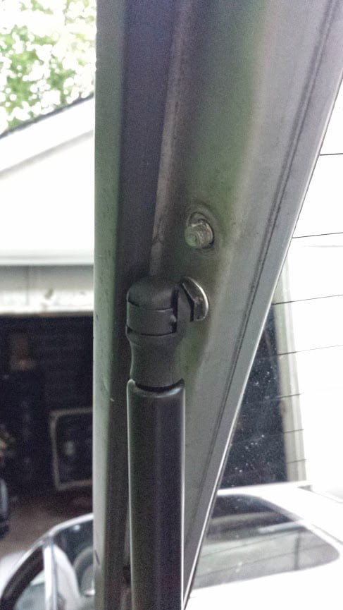

-
Does anyone know how those stupid balls are held in on the rear hatch?
The ones attached to the body are just threaded in, but what about the ones on the hatch portion? When I try to put a tool on them, the material around it flexes a lot and it doesn't budge… -
IIRC, They're welded or something on the earlier models.
I've heard that you can cut it off, drill and tap an M6
and use removable ones from the 87-89 hatch lifts
or aftermarket lifts that have the ball.
84 AE/Shiro #683/Shiro #820/84 Turbo -
Thank you! I'll cut and drill in that case since the aftermarket ones I bought have the ball. -
I just drilled out the bracket and used a nut on the inside to hold the ball, then I cut the remaining threads with a cutoff wheel as flush as I could -
Issue solved. Didn't even get rid of the oem studs. Just drilled 2 holes about 1 cm forward of the oem stud and fastened an M8 rivnut in there. Attached ball stud. Boom, done. -
Pictures?Originally posted by frostvectron -
Shouldn't be hard to imagine… but:

Trunk opens a bit more than normal, but not too much of a difference.

Copyright © 2006–. All rights reserved. Privacy Policy